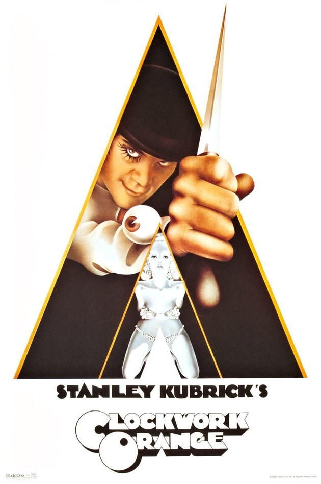

A saga conta a história de uma família mafiosa que luta para estabelecer sua supremacia na América depois da Segunda Guerra. Uma tentativa de assassinato deixa Vito Corleone incapacitado e força os filhos Michael e Sonny a assumirem os negócios.

O jovem Alex passa as noites com uma gangue de amigos briguentos. Depois que é preso, se submete a uma técnica de modificação de comportamento para poder ganhar sua liberdade.
Em Nova York, em 1987, o belo jovem profissional Patrick Bateman tem uma segunda vida como um horrível assassino em série durante a noite. O elenco é formado pelo detetive, a noiva, a amante, o colega de trabalho e a secretária. Esta é uma comédia de humor seco que examina os elementos que transformam um homem em um monstro.